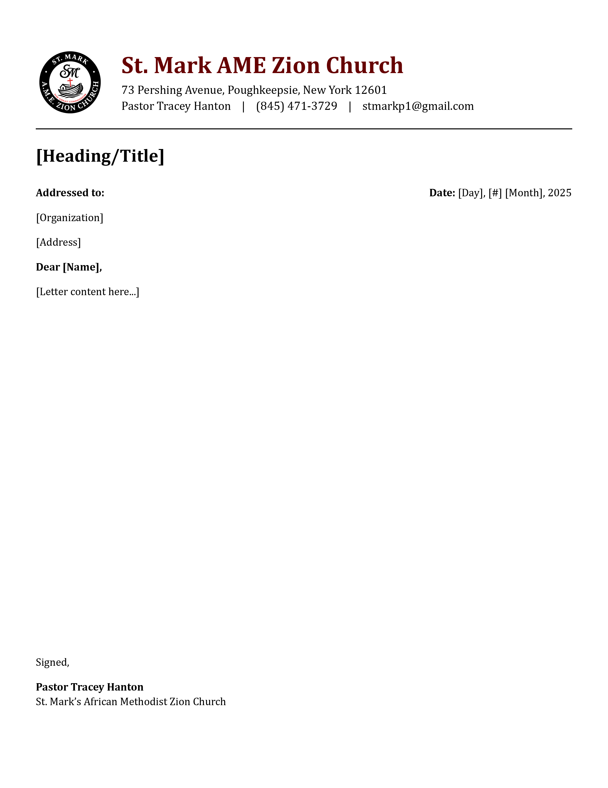

My FilesInternet Explorer
My FilesInternet Explorer PhotosMedia PlayerYoutube Channel
PhotosMedia PlayerYoutube Channel Latest Work
Latest Work HelpInternet Explorer
My Files
Media Player
readme.txt
HelpInternet Explorer
My Files
Media Player
readme.txt
 Projects
Projects
Site Under Construction, live updates 10-09-2025
Work being uploaded...

My Project Categories
Browse through three main sections. Each category contains real client work, creative concepts, and professional projects across mediums.
Graphic Design
Video Editing
Film Reel
Creative Film Reel
A curated reel featuring narrative work, cinematography, and editing. Includes short film highlights, branded sequences, and original visuals — demonstrating visual storytelling, pacing, and camera work across multiple genres.
Brand Identity Projects
These branding pieces were created as part of my design work at The UPS Store, where I collaborated directly with clients to develop business cards, menus, promotional graphics, and logos tailored to their businesses. Each project reflects a unique brand voice, while maintaining clarity, structure, and print-readiness.

Storyboarding & Process
A look into my process and some examples of my storyboarding work.
Typography-Driven Experiments
A collection of kinetic, experimental, and layout-focused projects centered around expressive and functional use of type. These projects span motion, print, and digital — each one emphasizing form, rhythm, and the emotional power of letterforms.

St. Mark AMEZ
Brand Identity · Typography & Layout Design
Project Brief
A full visual identity redesign for St. Mark AMEZ, including logo, business cards, letterhead, website, and web ad. The project aimed to modernize their presence while honoring their community heritage.
Logo (Before)
Logo Elements (After)


Business Cards & Letterhead
Front BC

Back BC
Letterhead
Web & Digital
Website Preview

Play Web Ad

Internal Documents & Systems
Operations Design · Internal Tools · Data Visualization
Beyond client-facing design, I develop internal systems that keep everything running smoothly — from pricing databases and digital tools to organized training resources. These behind-the-scenes projects enhance efficiency, ensure consistency, and let creative ideas move faster from concept to completion.
UPS Internal Documents
Private Mailbox Price Sheet

Internal Printing Price Sheet

Passport Photo Digitization Tool

Personal Systems & Training
Excel Print Pricing Sheets

Staff Business Card Sketches

Job Application Template

Custom Tools & Maps
Custom Excel Notary Journal

Greater NYC Traffic Map

Originally started as a data visualization project in school, this interactive map evolved into a prototype for a live, dynamic traffic mapping system — a blend of design, analytics, and technical curiosity.
Cookies & Beyond
Complete Brand System for a Boutique Dessert Business
Emerald Bud
Luxury Packaging for a Boutique Cannabis Brand
üåø Project Overview
Pow Pow Crunch
Conceptual Cereal Box for a Fictional Sugar Bomb
Package
Package
Lyrics in Motion
Kinetic Type · Motion Design · Sound-Responsive Layout
üéß Project Overview
This motion graphics study syncs dynamic typography with a vocal performance — transforming each beat, pause, and word into a rhythmic visual pulse. Each lyric reacts with scale, timing, and motion to mirror the delivery and tone of the verse.


Techniques & Tools
- After Effects (3D camera + text animation)
- Font: Monospaced + Condensed Sans
- Timing manually matched to waveform
- Visual accents hit on beat drops + vocal emphasis

Typo:Editorial
Swiss-Style Layout · Poster System · Visual Hierarchy
üìê The Concept
This is a modular poster system built on strict grid structure — inspired by editorial layouts and Swiss International Style. Each poster explores a different typographic technique while sticking to a strict column and baseline rhythm.


Design Principles
- Grid: 8-column system, modular baseline spacing
- Typefaces: Neue Haas Grotesk + Bodoni
- Color: One accent per composition, rest in grayscale
- Each poster acts as a “lesson” in balance, contrast, and space

TypeMood Zine
Print & Web Zine · Typeface Personality Showcase
ü߆ Overview
TypeMood is a conceptual mini-zine exploring the moods and personalities behind different typefaces. Each spread is dedicated to a single font and its visual “voice,” using original phrases and layout styles that embody its identity.


Features
- Hand-assembled spreads in InDesign
- Each font shown in real-world usage: ads, menus, web UIs
- Distributed as both PDF + vertical scroll site

Product Ad Cut
Commercial Editing · Promo Spot · Visual Rhythm
üéØ Overview
A sleek 30-second promotional edit for a fictional smart wearable. This project focused on rhythm-matched cuts, animated overlays, and tight commercial pacing — the kind of quick, slick video you'd see pre-roll on YouTube or TikTok.
Details
- Edited in Adobe Premiere Pro
- Overlay animation in After Effects
- Cut-to-beat pacing with tight zoom transitions
- Product, hands, and lifestyle B-roll sourced and composited


Opening Titles
Cinematic Title Design · Visual Atmosphere · Sound Design
üé¨ Project Description
A mood-driven opening title sequence inspired by modern drama TV. Created as a speculative intro for a fictional psychological thriller, this piece pairs text, atmosphere, and slow montage to create an unsettling tone.
Process
- Footage sourced and recolored to match tone
- Type layout in After Effects using tracked motion
- Atmospheric ambient soundtrack + risers
- Influenced by titles like Mindhunter and Sharp Objects


Fracture
Experimental Editing · Timeline Deconstruction · Visual Metaphor
üß© Concept
Fracture is a conceptual video piece about memory loss and nonlinear perception. Through editing techniques like glitch overlays, time reversal, jump cuts, and layered timelines, the video mimics a fractured psychological state.
Techniques
- VHS distortion and analog overlays
- Reverse time sequences + flicker masking
- Use of opacity ghosts and color splits
- Sound design: pitch-shifted dialogue + reverb stack


Connecting to the Internet...

 Youtube Channel
Youtube Channel
 Wakapedia
Wakapedia
Consistencyy
927 subscribersWebsite Launch Incoming
Just wrapped up 3.0 of conor.style, working on putting up my work now...
Posted 1 week agoYoutube Update almost Complete
Almost finished up the Youtube Channel, working on Wikipedia page next üé•üî•
Posted 3 weeks ago
Latest Upload:
VG Concept Pixel Art
Shorts
What's your definition of love?

Resonance Nights

TAKE OFF (Cooking)
SPACING OUT
Recommended

Medicine - Daughter [MV/Original Cover]
MGMT - Little Dark Age (Prødigy Remix) MUSIC VIDEO
mounika - cut my hair (music video)
More videos from CONSISTENCYY...
VG Concept Pixel Art

Eminem If he was RESONANCE

Jean Dawson - POWER FREAKS
world$tar money - channel bumper

KENDRICK LAMAR - FOR SALE?

TAKE OFF.

somethings always wrong with his brain
WHATS YOUR DEFINITION OF LOVE?
the burn marks on my memories never fade

FAVORITE SONGS OF ALL TIME (OAT)
ANIMATIONS & MORE
More videos from CONSISTENCYY...
Loading title...
Loading description...
Loading date...
Wakapedia
The Waka Free Encyclopedia
Conor McCutcheon
Designer, Editor & Notary Public
YONKERS, NY · conor.style · conormcc.edits@gmail.com
Summary
Graphic Designer with expertise in motion graphics, typography, brand identity, and video production. Proficient in Adobe CC (Illustrator, Photoshop, InDesign, Premiere Pro, After Effects), DaVinci Resolve, Blender, and AutoCAD. Experienced in video production, DSLR/drone operation, and color grading. Eager to contribute fresh ideas and energy to a creative team. Quick learner with a passion for design trends and visual storytelling.
Experience
The UPS Store — Graphic Designer & Notary Public
Aug. 2024 – Present
- Created custom marketing and branding materials: business cards, flyers, posters, and certificates.
- Optimized images for print/digital formats.
- Collaborated directly with customers to translate ideas into compelling designs.
PopGeeks.com — Production Assistant, Designer
Aug. 2023 – Present
- Designed branded content including business cards, blog visuals, and social media assets.
- Updated site and blog posts using HTML/CSS for a multimedia experience.
- Shot and edited live events, managing DSLR workflows and post-production.
Freelance — Designer & Video Editor
2021 – Present
- Delivered branding packages, social media assets, and promotional videos for diverse clients.
- Led all stages of production: planning, graphics, revisions, and final delivery.
- Adapted creative styles to meet unique brand messaging needs.
Education
BA in Graphic Design, Minor in Film & Media Studies — SUNY at Buffalo, 2023.
Licenses & Awards
- Certified Notary Public, State of New York (2025–2029)
- FAA TRUST Drone Certification, 2025
- Winner, NHTSA Video Entry Contest, 2023
About
| Born | 2001 |
| YT Channel | Consistencyy |
| Profession | Artist |
| Specialties | Motion, Design, Film |
Notable Works
VG Pixel Art
Concept animation experiment.
Power Freaks
Visualizer for Jean Dawson.
Burn Marks
Visual poetry short.